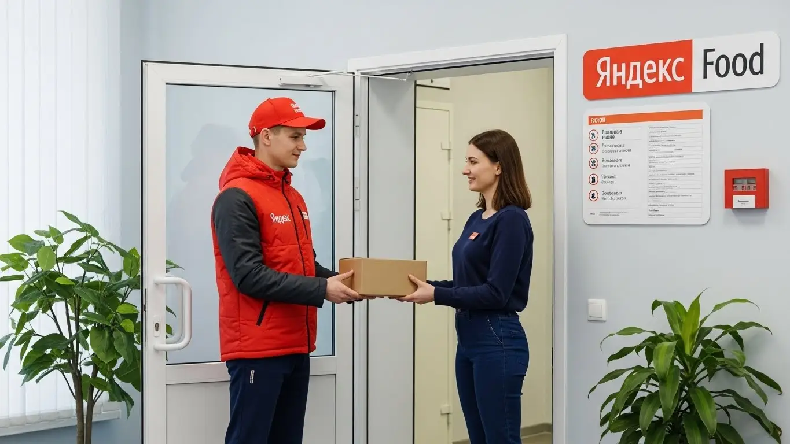

Доход курьера Яндекс Еда в Армавире 2025-2026: полный разбор
- Работа курьером Яндекс Еды в Армавире: для кого эта вакансия и что вы получите
- Сколько вы будете зарабатывать курьером в Армавире: калькулятор дохода и разбор выплат
- Реальный заработок курьера в Армавире: смены и месячный доход
- График работы и форматы занятости
- Требования к кандидату и документы
- Самозанятость, налоги и юридическая чистота
- Пошаговое оформление и первый выход на линию в Армавире
- Пешком, на вело или на авто: что выгоднее в Армавире
- Районы, маршруты и «топовые» зоны заказов в Армавире
- Безопасность, страховка, штрафы и оплата простоя
- Плюсы и возможные минусы работы курьером в Армавире
- Реальные истории и отзывы курьеров из Армавира
- Ответы на главные вопросы о работе курьером Яндекс Еды в Армавире
- Короткие ответы на главные вопросы
- Подведём итоги: твой следующий шаг в Армавире
Все города
Думаешь, работа курьером в Армавире — это просто: сел на велик или в машину и поехал зарабатывать? Как бы не так. Многие видят только верхушку: свободный график и вроде бы неплохие цифры в рекламе. А потом сталкиваются с реальностью: стоишь в пробке на Кирова, «убиваешь» подвеску в частном секторе у Мясокомбината, а доход едва покрывает бензин и обед. Я здесь, чтобы рассказать, как обстоят дела на самом деле, без розовых очков и обещаний золотых гор.
Поверь, понимать «внутрянку» этой работы в Армавире нужно до того, как ты выйдешь на первый заказ, а не после. Потому что твой реальный заработок — это не просто сумма за доставки. Из неё нужно вычесть налог самозанятого, расходы на транспорт, связь, а иногда и штрафы. Большинство новичков не понимают, почему в Центре заказы сыпятся один за другим, а на Черемушках можно час прождать впустую, как работает приоритет и почему рейтинг так важен. В итоге — разочарование и мизерный доход в первый же месяц.
В этом гиде мы всё разложим по полочкам. Мы честно посчитаем, сколько чистыми можно заработать в Армавире пешком, на велосипеде и на авто в 2025-2026 годах. Я покажу на карте города самые «рыбные» районы и часы пик, а где лучше не появляться. Разберем, как погода — от летней жары до зимнего гололеда — влияет на заказы и доход. И главное — расскажу, за что реально штрафуют и как этого избежать, чтобы работать в плюс, а не в минус. Если же ты предпочитаешь краткую сводку и готов сразу подать заявку, вся необходимая информация про работу курьером Яндекс Еда в Армавире собрана на специальной странице.
Меня зовут Алексей. Я сам откатал не одну тысячу километров по Армавиру с желтым коробом за спиной, а сейчас у меня свой небольшой таксопарк-партнер, так что я вижу эту кухню с двух сторон. Никакой рекламной шелухи от Яндекса тут не будет. Только мясо, только реальный опыт и советы, которые помогут тебе зарабатывать, а не выживать. Готов? Тогда давай по порядку, начнём с главного.
Прежде чем нырять в детали, давай быстро пробежимся по ключевым моментам в формате короткого гида. Так ты сразу поймёшь, о чём пойдёт речь.
Что ты точно узнаешь из этого разбора
В этой статье ты ТОЧНО узнаешь:
- Сколько реально можно заработать в Армавире за смену пешком, на велосипеде и на авто, и из чего складывается эта сумма?
- В каких районах Армавира (Центр, Черемушки) и в какое время суток заказов больше всего, чтобы не кататься впустую?
- Что выгоднее для Армавира — доставлять пешком, на велосипеде или на машине, и какие у каждого способа есть подводные камни?
- За что реально могут снизить рейтинг или применить санкции и как этого избежать?
- Как правильно оформить самозанятость за 10 минут и сколько налогов придётся платить с дохода?
- Как работает оплата простоя, если заказов мало, и почему это важно для твоего заработка?
А если тебе некогда читать всю статью — переходи сразу к заключению, где ты найдёшь короткие ответы на все эти вопросы и указания, в каких разделах искать подробности.
А чтобы было ещё нагляднее, вот основные цифры и факты о работе в Армавире в одной картинке.
Яндекс Еда в Армавире: ключевые цифры
Доход в час
350 – 500 ₽
В часы высокого спроса и с бонусами
Заработок за смену
2 800 – 3 800 ₽
Средний доход за полный 8-часовой слот
Оптимальный формат
Пеший / Вело
Идеально для компактного центра Армавира
Чаевые от клиентов
+15-20%
Дополнительный доход к основной ставке
Работа курьером Яндекс Еды в Армавире: для кого эта вакансия и что вы получите
Скажу прямо: работа курьером — это не для всех, но для многих в Армавире это одна из лучших вакансий. Это не просто «беготня с сумкой», а возможность получить живые деньги здесь и сейчас, не подстраиваясь под начальника и жёсткий график. Если тебе нужна свобода, понятные условия работы и оплата за реальные действия, а не за просиживание штанов, то эта работа тебе точно зайдёт.
Я сам начинал с этого и знаю, о чём говорю. Главное — понять, подходит ли такой формат именно тебе. Здесь ты сам себе хозяин: решаешь, когда выходить на линию, сколько заказов брать и на чём передвигаться. Это идеальный старт для тех, кто хочет зарабатывать, не имея за плечами дипломов и многолетнего опыта, или для тех, кому просто нужна надёжная подработка.

Кому подойдёт эта работа в Армавире
Эта вакансия, по сути, универсальна. Я вижу на линии самых разных людей, и у каждого свои причины. Чаще всего к нам приходят:
- Студенты. Учишься в АГПУ или в любом другом армавирском вузе или колледже? Отлично. Можешь выходить на пару часов после пар или работать по выходным. График полностью гибкий, так что мешать учёбе не будет, а на карманные расходы и съём жилья заработаешь легко.
- Люди без опыта. Если у тебя нет опыта работы или ты решил сменить сферу, это самый простой вход в профессию. Тебя всему научат онлайн за пару часов, никаких сложных собеседований и испытательных сроков. Главное — желание работать и наличие смартфона.
- Те, кому нужна подработка. Работаешь на основной работе, но денег не хватает? Или просто есть свободное время по вечерам? Выходи на линию на 3–4 часа в самые пиковые моменты — с 18:00 до 21:00 — и получай хороший дополнительный доход.
- Водители. Если у тебя есть своя машина, она может приносить деньги, а не только требовать расходов на бензин. Курьеры на своем авто зарабатывают больше всех, берут дальние заказы и не зависят от погоды. В Армавире, где районы разбросаны, это особенно выгодно.
- Те, кому важен свободный график и быстрые деньги. Не хочешь ждать зарплату месяц? Здесь ежедневные выплаты приходят прямо на карту. Заболел, нужно уехать, просто нет настроения — не выходишь на смену, никто слова не скажет. Такая свобода дорогого стоит.
Главные преимущества для жителей районов Центр, Черемушки, Северный микрорайон
Один из главных плюсов — возможность работать прямо у себя под боком. Не нужно тратить час на дорогу до работы и обратно. Ты просто выходишь из дома, включаешь приложение «Яндекс Про» и начинаешь получать заказы в своём районе.
Например, если ты живёшь в Черемушках, тебе не придётся ехать в центр за заказами. В этом районе полно кафе, пиццерий и магазинов, откуда люди постоянно заказывают доставку. То же самое касается Северного микрорайона — там много новостроек, а значит, и много потенциальных клиентов. Живёшь в Центре? Вообще отлично, здесь самая высокая плотность заказов, особенно в обеденное время и по вечерам. Ты экономишь время, бензин и силы, работая на знакомых улицах.
Краткое обещание по доходу и условиям
Если говорить о деньгах, то в Армавире реальные цифры такие: за смену можно заработать от 2000 до 4000 рублей, в зависимости от способа передвижения и количества часов. При полной занятости доход может доходить до 70 000 – 80 000 рублей в месяц. Это не обещания с потолка, а то, что получают ребята, которые работают с головой.
Ключевые условия работы просты и прозрачны. Ты работаешь, когда хочешь — это и есть свободный график. Деньги получаешь каждый день — это ежедневные выплаты. Для старта не нужен опыт работы или специальное образование. Требования к курьерам минимальны: быть совершеннолетним (строго с 18 лет), иметь смартфон на Android и оформить самозанятость (это просто и делается онлайн за 10 минут). Для доставки заказов понадобится термокороб или термосумка, которую можно получить у партнеров сервиса.
В общем, работа курьером в Армавире — это реальный шанс зарабатывать без начальников и жёстких рамок. Она идеально подходит как для подработки, так и для основного источника дохода, особенно если ты ценишь возможность работать рядом с домом. Мой совет новичкам: начинайте работать в своём районе. Вы лучше знаете улицы, дворы и короткие пути, что поможет выполнять заказы Яндекс Еды быстрее и, соответственно, больше зарабатывать с самого начала.
Сколько вы будете зарабатывать курьером в Армавире: калькулятор дохода и разбор выплат
Самый главный вопрос, который всех волнует: «Сколько я буду получать?». Сразу скажу: фиксированной зарплаты здесь нет, и это даже хорошо. Твой доход напрямую зависит от тебя: сколько часов ты на линии, как быстро двигаешься и в какое время работаешь. Давай разберём по косточкам, из чего складываются выплаты, чтобы у тебя была полная картина.
Система абсолютно прозрачная. Все начисления ты видишь в приложении «Яндекс Про» в реальном времени. Выполнил заказ — деньги сразу появились на балансе. Никаких «серых» схем и задержек. Ты всегда точно знаешь, сколько заработал за день.

Из чего складывается доход курьера
Твой итоговый заработок — это не просто плата за доставку. Он состоит из нескольких частей, которые суммируются.
- Оплата за заказ. Это базовая стоимость за то, что ты забрал заказ из точки А (ресторан, магазин) и доставил в точку Б (клиенту).
- Доплата за расстояние. Чем дальше ехать или идти до клиента, тем больше доплата. Приложение строит оптимальный маршрут, и каждый километр этого пути оплачивается.
- Повышающие коэффициенты. Это самое интересное. В часы пик (обед, ужин), в плохую погоду (дождь, жара) или в районах с высоким спросом стоимость заказов умножается на коэффициент. На карте в «Яндекс Про» такие зоны подсвечиваются — там можно заработать в 1.5–2 раза больше за тот же заказ.
- Бонусы. Сервис часто предлагает персональные цели. Например, выполни 15 заказов за день и получи дополнительно 500 рублей. Это отличный стимул работать активнее.
- Чаевые. Все чаевые, которые оставляют клиенты через приложение, полностью твои. Сервис не берёт с них никакой комиссии.
- Оплата простоя. Это ключевое преимущество. Если ты вышел на запланированный слот, а заказов временно нет, сервис всё равно начисляет тебе минимальную оплату за время ожидания. Ты застрахован от ситуаций, когда можно просидеть час без дела и ничего не получить.
Как пользоваться калькулятором дохода
Чтобы ты мог прикинуть свой потенциальный заработок ещё до старта, на сайте есть специальный калькулятор. Пользоваться им проще простого.
Сначала выбери свой город — Армавир. Затем укажи, как планируешь доставлять: пешком, на велосипеде или на своём авто. После этого отметь, сколько часов в день и сколько дней в неделю ты готов работать. На выходе калькулятор покажет примерный диапазон твоего дохода за день и за месяц. Это не точная цифра, а ориентир, но он помогает понять, на что можно рассчитывать.
Прикинь свой доход в Армавире
8 часов
5 дней
Примерный доход в месяц:
* Расчёт основан на средней ставке в Армавире (~400 ₽/час) и не учитывает бонусы, чаевые и повышенные коэффициенты. Ваш реальный доход может отличаться.
Чтобы получить более точный прогноз для себя, можешь воспользоваться формой на специальной странице. Там же найдёшь актуальные условия, ответы на вопросы и сможешь подать заявку — вся информация про работу курьером Яндекс Еда в твоём городе собрана в одном месте.
Примеры расчёта для пешего, вело- и авто‑курьера в Армавире
Давай на конкретных примерах посмотрим, сколько можно заработать в Армавире.
- Пеший курьер. Допустим, ты студент и выходишь на подработку на 4 часа вечером в центре. За это время в среднем можно выполнить 8–10 заказов. С учётом бонусов и возможных коэффициентов твой доход за смену составит примерно 1200–1600 рублей.
- Велокурьер. Ты работаешь в выходной день, 8 часов, катаешься между спальными районами вроде Черемушек и Родины. На велосипеде ты быстрее, заказов выполняешь больше — около 20–25 за смену. Твой заработок может составить 2500–3200 рублей за день.
- Автокурьер. Ты работаешь на полную ставку, 5 дней в неделю по 8–10 часов. На машине ты можешь брать самые выгодные заказы: большие, тяжёлые, на дальние расстояния, в том числе в пригородные зоны. За день можно сделать 3500–4500 рублей и больше. За месяц при таком графике заработок выходит 70 000–85 000 рублей до вычета расходов на бензин.
Сравнение типов доставки в Армавире
| Параметр | Пеший курьер | Велокурьер | Автокурьер |
|---|---|---|---|
| Примерный доход в час | 300–400 ₽ | 350–500 ₽ | 450–600 ₽ |
| Лучшие районы | Центр, плотная застройка | Черемушки, Родина, Северный | Весь город, пригород |
| Плюсы | Нет расходов, фитнес | Скорость, маневренность | Высокий доход, комфорт |
| Минусы / Расходы | Низкая скорость, усталость | Зависимость от погоды | Расходы на бензин и амортизацию |
Как видишь, твой заработок курьера — это гибкая система, которой можно и нужно управлять. Доход складывается из многих частей, и понимание этой механики поможет тебе зарабатывать больше. Мой главный совет: не бойся экспериментировать. Попробуй выходить в разное время, в разных районах Армавира, чтобы найти свою самую выгодную стратегию.
Реальный заработок курьера в Армавире: смены и месячный доход
Теперь от теории к практике — к реальным деньгам на балансе. Никаких «до 100 тысяч в неделю», как в рекламе. Поговорим о цифрах, которые ты будешь видеть, работая курьером в Армавире. Твой заработок — это не фиксированная зарплата, а результат твоей скорости, смекалки и умения быть в нужном месте в нужное время. Сколько потопаешь, столько и полопаешь, но есть нюансы, которые помогут «топать» эффективнее.
Доход курьера напрямую зависит от трёх вещей: на чём ты передвигаешься (пешком, на велосипеде или на авто), сколько часов готов работать и насколько грамотно используешь пиковые часы спроса. Кто-то выходит на пару часов после основной работы и кладёт в карман 1000–1500 рублей, а кто-то катается полный день и увозит домой 3000–4000 рублей. Дальше я разложу всё по полочкам, чтобы у тебя в голове сложилась чёткая картина.

Диапазон дохода для подработки и полной занятости
Если ты ищешь подработку на 2–4 часа в день, чтобы закрыть мелкие расходы или накопить на что-то, цифры в Армавире будут примерно такие. Пеший курьер или велокурьер за короткую смену в 3-4 часа может сделать 800–1500 рублей. В месяц, если выходить 4–5 раз в неделю, набегает 15 000 – 25 000 рублей. Это отличный вариант для студентов или тех, кто совмещает с основной работой. На машине за то же время выйдет больше, около 1200–2000 рублей, но не забывай вычитать расходы на бензин.
При полной занятости, когда ты работаешь по 8–10 часов в день, доход совсем другой. Пеший или велокурьер, который работает полную смену 5 дней в неделю, может рассчитывать на 45 000 – 70 000 рублей в месяц. Это уже серьёзные деньги для нашего города. Водитель-курьер на своем авто при таком же графике может зарабатывать 60 000 – 90 000 рублей в месяц до вычета расходов на топливо. Цифры реальные, но они требуют дисциплины и понимания, как работает система заказов.
Как район, время суток и погода влияют на доход
Запомни три кита высокого заработка: место, время и погода. В Армавире, как и везде, есть «рыбные» места. Это, в первую очередь, центр — улицы Ленина, Кирова, где сосредоточено большинство кафе и ресторанов, откуда идут заказы Яндекс Еды. В обеденное время (с 12:00 до 15:00) и вечером (с 18:00 до 22:00) здесь всегда горячо. В это время на карте в приложении «Яндекс Про» появляются зоны с повышенным коэффициентом — так называемые «фиолетовые зоны». Заказ из такой зоны оплачивается дороже.
Погода — твой лучший друг. Как только начинается дождь, сильная жара или снег, большинство людей предпочитают сидеть дома. Спрос на доставку взлетает, а вместе с ним и коэффициенты с бонусами. Клиенты в такую погоду становятся щедрее на чаевые, потому что понимают, чего тебе стоит доставить их заказ. Пятница вечер, суббота и воскресенье — это стабильно пиковые дни, когда можно сделать основную кассу на неделю. Работать в плохую погоду тяжело, но очень выгодно.
Советы по увеличению заработка от опытных курьеров
Чтобы зарабатывать больше, не обязательно работать дольше. Нужно работать умнее. Во-первых, планируй свои смены. Заранее бронируй в приложении плановые слоты на самое выгодное время — обед, вечер и выходные. Так у тебя будет приоритет в заказах. Во-вторых, не гоняйся за одним заказом с высоким коэффициентом через весь город. Лучше выбрать одну зону, например, центр или густонаселённый район вроде «Черемушек», и работать в ней. Ты сэкономишь время и силы, а заказов будет больше.
Изучи карту своего района. Знай, где находятся популярные рестораны, фастфуд, магазины. Это поможет тебе быстрее принимать решения и выполнять заказы. Если ты водитель-курьер на своем авто, используй его для дальних заказов или в плохую погоду. Но если видишь, что в центре пробки, а заказы идут один за другим на короткие расстояния, иногда выгоднее припарковаться и пройтись пешком. Главное — постоянно анализировать ситуацию и быть гибким.
Вот реальный кейс. Парень-велокурьер у нас начинал, катался по всему городу без разбора. За 8 часов выходило 1800-2000 рублей. Я ему посоветовал сменить тактику: с 11 до 15 работать строго в центре, а с 18 до 22 — в спальном районе «Родина». В первый же день по новой схеме он заработал 2700 рублей. А когда в субботу пошёл ливень, он не испугался, вышел на линию и за 7 часов сделал почти 4500 рублей за счёт высоких коэффициентов и щедрых чаевых.
В итоге, твой заработок курьером в Армавире — это не лотерея, а вполне прогнозируемая вещь. Главное — не лениться, анализировать спрос и использовать пиковые часы. Вместо того чтобы бездумно кататься по 12 часов, лучше отработать 8 часов, но в правильное время и в правильном месте.
График работы и форматы занятости
Одно из главных преимуществ этой работы — свободный график. Ты сам себе начальник и сам решаешь, когда работать, а когда отдыхать. Это идеальный вариант для тех, кто не хочет сидеть в офисе с 9 до 6. Можно совмещать с учёбой, основной работой или просто использовать как временный источник дохода. Никто не будет стоять над душой и указывать, что делать. Твой главный инструмент — приложение «Яндекс Про», через которое ты управляешь своим временем и заказами.

Подработка после учёбы или основной работы
Совмещать доставку с другими делами проще простого. Вот пара живых примеров из Армавира. У нас работает студент из АГПУ, живёт в районе «Мясокомбината». Он выходит на линию на велосипеде после пар, примерно с 18:00 до 22:00, плюс берёт полную смену в субботу. В будни делает по 1000–1200 рублей, в выходной — до 3000. В месяц у него стабильно выходит 20–25 тысяч рублей. А благодаря опции частых выплат не нужно ждать зарплаты целый месяц.
Другой пример — мужчина, работает на заводе по сменному графику. У него есть старенькая «девятка». Когда у него выпадает свободный вечер или выходной, он садится за руль и берёт заказы Яндекс Доставки. В основном возит продукты из гипермаркетов и заказы из ресторанов в отдалённые районы. Говорит, что за 3–4 вечерних часа спокойно делает 1500 рублей чистыми. За месяц набегает дополнительно 25–30 тысяч к основной зарплате.
Полная занятость: как выглядит типичный день курьера
Если ты решил сделать доставку своей основной работой, твой день будет выглядеть примерно так. Опытные курьеры не выходят на линию в 8 утра — в это время заказов мало. Оптимально начинать в 10:30–11:00, чтобы раскататься к обеденному пику. С 12:00 до 15:00 — самое жаркое время, в основном заказы из Яндекс Еды в центре. После 15:00 наступает затишье. Это время можно использовать для обеда, отдыха или выполнения личных дел.
Второй пик начинается около 17:30 и длится до 21:30–22:00. В это время основной поток заказов идёт из ресторанов и магазинов в спальные районы. Люди возвращаются с работы и заказывают ужин или продукты. После 22:00 спрос падает, и можно заканчивать смену. Важно понимать, что это не безостановочный марафон. Между заказами всегда есть паузы по 5–15 минут, чтобы перевести дух.
Как планировать слоты и выходы через приложение «Яндекс Про»
Твой главный рабочий инструмент — это приложение «Яндекс Про». В нём есть раздел «Расписание», где ты можешь планировать свои выходы на линию. Есть два типа смен: свободные и плановые слоты. Свободный слот — это когда ты просто нажимаешь кнопку «На линию» и начинаешь работать в любое время. Плановый слот ты бронируешь заранее на определённое время и в определённом районе. У курьеров на плановых слотах есть приоритет при распределении заказов, а иногда и бонусы или гарантия минимального дохода в час.
Чтобы стабильно зарабатывать, важно относиться к этому серьёзно. Забронировал слот с 18:00 до 22:00 в центре — будь добр приехать в эту зону к 18:00. Опоздания или пропуск слота без уважительной причины снижают твой рейтинг и активность. А чем ниже рейтинг, тем меньше заказов тебе будет предлагать система. Поэтому планируй своё время, выбирай удобные слоты заранее и не опаздывай. Это залог стабильного потока заказов и хорошего дохода.
Вот тебе случай из жизни. Новичок постоянно опаздывал на свои плановые слоты на 10-15 минут, думал, что это мелочь. Через неделю заметил, что заказов стало приходить заметно меньше. Его рейтинг активности упал, и система стала давать ему заказы в последнюю очередь. После разговора со мной он начал приезжать в выбранную зону за 5-10 минут до начала слота. Буквально через пару дней всё наладилось: заказы пошли один за другим, и заработок вернулся на прежний уровень.
Итак, свободный график — это круто, но он требует самодисциплины. Используй «Яндекс Про» для планирования, соблюдай простые условия работы, и тогда у тебя будет и свобода, и стабильные выплаты.
Требования к кандидату и документы
Многих пугает слово «требования», когда речь заходит про условия работы курьером в Яндекс Еде. Сразу представляются какие-то экзамены и кипы бумаг. Расслабься, здесь всё гораздо проще. Система сделана так, чтобы ты мог как можно быстрее начать зарабатывать, даже без опыта, а не бегать по инстанциям. Главное — твоё желание работать и наличие базовых документов, которые и так есть у каждого взрослого человека.
Помню парня, лет 25, пришёл ко мне в таксопарк устраиваться, но с машиной были проблемы. Я предложил ему подработку курьером в Еде, пока авто в ремонте. Он засомневался, мол, у него ни опыта, ни профильного образования. Я ему объяснил, что тут это и не нужно. В итоге он за вечер собрал паспорт, ИНН, нашёл свою банковскую карту, а на следующий день уже вышел на первые заказы в центре Армавира. За первые 4 часа заработал около 1200 рублей и был очень доволен, что не сидит без дела и денег.
В общем, барьер для входа минимальный. Если ты совершеннолетний, с документами всё в порядке и готов двигаться, то считай, что работа у тебя уже почти в кармане. Главный совет: собери все нужные бумаги заранее в одну папку, чтобы процесс регистрации прошёл максимально быстро.
Возраст, гражданство и базовые условия
Давай по порядку разберёмся, кто может стать курьером. Первое и самое главное — возраст. Работать в Яндекс Еде можно строго с 18 лет. Никаких исключений, даже с согласия родителей, здесь нет. Это связано с материальной ответственностью и законодательством.
Второе — гражданство. Сервис принимает на работу граждан Российской Федерации, а также граждан стран, входящих в Евразийский экономический союз (ЕАЭС). Напомню, это Армения, Беларусь, Казахстан и Кыргызстан. Если у тебя паспорт одной из этих стран, ты подходишь.
И третье — общие условия. Никто не требует от тебя олимпийской подготовки. Но ты должен понимать, что работа пешком, на велосипеде или самокате требует определённой выносливости. Если планируешь доставлять как пеший курьер, будь готов проходить по несколько километров за смену. Для водителя-курьера ключевое — уверенное вождение и знание города. По сути, это работа для активных людей, которым сидеть на месте скучно.
Какие документы нужны для работы курьером
Чтобы всё прошло гладко, подготовь небольшой, но важный пакет документов. Без них система просто не сможет тебя зарегистрировать и перечислять заработок. Вот что тебе понадобится:
- Паспорт. Основной документ, удостоверяющий твою личность. Нужен для оформления договора и регистрации в системе.
- ИНН (Идентификационный номер налогоплательщика). Он необходим для оформления самозанятости и уплаты налогов. Если ты не помнишь свой номер, его можно за пару минут бесплатно узнать на сайте Федеральной налоговой службы (ФНС).
- Банковская карта. Нужна любая дебетовая карта российского банка, оформленная на твоё имя. Именно на неё будут приходить ежедневные выплаты за выполненные заказы. Карта родственников или друзей не подойдёт.
- Медицинская книжка. Для доставки заказов из ресторанов и кафе она часто является обязательным требованием. Рекомендую сделать её заранее в одной из клиник Армавира, чтобы не было задержек со стартом. Это стандартная процедура, которая нужна для работы с продуктами питания.
По сути, этот список — твой пропуск к первым заказам и стабильному доходу. Паспорт подтверждает твою личность, ИНН нужен для легальной работы, а карта — чтобы получать честно заработанные деньги. Медкнижка же является гарантией безопасности для клиентов и для тебя.
Можно ли работать с 16 лет и какие есть альтернативы
Часто спрашивают, можно ли устроиться в Яндекс Еду с 16 или 17 лет. Отвечаю честно и прямо: нет, нельзя. Политика компании однозначна — курьерами могут стать только совершеннолетние, то есть с 18 лет. Это связано со сложностями трудового законодательства для несовершеннолетних и полной материальной ответственностью за заказы.
Но это не значит, что в Армавире подростку нельзя найти подработку. Если тебе 16, и ты хочешь заработать свои первые деньги, рассмотри другие варианты. Например, часто ищут промоутеров для раздачи листовок у крупных торговых центров, вроде ТРЦ «Красная Площадь». Также можно поискать вакансии помощника в местных кофейнях или небольших магазинах. Летом всегда есть спрос на временную работу в парках или на аттракционах. Это хороший способ получить первый опыт и финансовую независимость, пока ждёшь совершеннолетия.
Самозанятость, налоги и юридическая чистота
Многих новичков пугают слова «самозанятость» и «налоги». Кажется, что это сложно, долго и связано с бумажной волокитой. На самом деле, всё ровно наоборот. Формат самозанятости — это самый простой и современный способ работать на себя легально, без головной боли с бухгалтерией и отчётами. Это не «серая» схема, а официальный доход и твоя финансовая безопасность.
У меня в таксопарке был водитель, который долгое время работал неофициально и боялся любых контактов с налоговой. Когда он решил подрабатывать автокурьером, я лично показал ему, как за 10 минут оформить статус самозанятого через телефон. Он был в шоке, насколько это просто. Теперь он видит все свои доходы в приложении Яндекс Про, налог считается автоматически, а для оплаты нужно нажать одну кнопку. Говорит, что так работать гораздо спокойнее: доход официальный, и никто не задаёт лишних вопросов.
Поэтому не стоит бояться этого статуса. Самозанятость — это твой инструмент, который делает работу прозрачной и защищённой. Ты платишь небольшой налог и спишь спокойно, зная, что работаешь вчистую.
Почему курьеры Яндекс Еды работают как самозанятые
Сотрудничество с курьерами в формате самозанятости выгодно и удобно для обеих сторон. Для тебя как для исполнителя это означает, что ты не наёмный работник с жёстким графиком, а независимый партнёр сервиса. Ты сам решаешь, когда и сколько работать — это и есть тот самый свободный график. Яндекс, в свою очередь, выступает как платформа-агрегатор, которая даёт тебе доступ к заказам и гарантирует оплату.
Вот главные плюсы такого формата:
- Официальный доход. Все деньги, которые ты получаешь, — «белые». Ты можешь при необходимости взять справку о доходах для банка, например, для получения кредита.
- Простота и отсутствие бухгалтерии. Тебе не нужно вести сложные отчёты, сдавать декларации и нанимать бухгалтера. Вся отчётность формируется автоматически в приложении «Мой налог».
- Легальность. Ты работаешь в рамках закона, платишь налоги и не рискуешь получить штрафы за незаконную предпринимательскую деятельность. Это гораздо безопаснее, чем получать деньги на карту «всерую».
- Гибкость и независимость. Статус самозанятого идеально подходит для работы со свободным графиком. Ты не привязан к одному работодателю и можешь использовать подработку курьером для дополнительного дохода.
Как за 10 минут оформить самозанятость через «Мой налог»
Регистрация статуса самозанятого — это элементарный процесс, который занимает не больше времени, чем заказ пиццы. Всё делается онлайн через официальное приложение от Федеральной налоговой службы. Вот пошаговая инструкция:
- Скачай приложение. Найди в Google Play или App Store приложение «Мой налог» и установи его на свой смартфон.
- Выбери способ регистрации. Самый быстрый — по паспорту РФ. Нажми на соответствующую кнопку.
- Отсканируй паспорт. Наведи камеру телефона на главный разворот паспорта. Приложение само распознает все данные. Проверь, чтобы всё было корректно.
- Сделай селфи. Система попросит сделать фотографию лица, чтобы сверить её с фото в паспорте. Это быстрая проверка личности.
- Подтверди регистрацию. После проверки данных нажми кнопку «Подтверждаю». Вот и всё, ты официально стал самозанятым.
Также можно зарегистрироваться через приложение «Яндекс Про» в процессе оформления или через личный кабинет некоторых банков (например, Сбербанк или Тинькофф). Процедура такая же простая. Это разовая операция, которая открывает тебе путь к легальному заработку.
Сколько и как платить налоги
Система налогообложения для самозанятых — одна из самых низких и понятных в стране. Тебе не придётся ломать голову над расчётами, всё происходит почти автоматически.
Ставки налога всего две:
- 4% — с доходов, полученных от физических лиц. В твоём случае это могут быть чаевые, которые клиенты переводят тебе напрямую.
- 6% — с доходов от юридических лиц и ИП. Так как Яндекс Еда — это юридическое лицо, именно по этой ставке будет облагаться твой основной заработок за доставки.
Процесс уплаты налога максимально упрощён. Приложение Яндекс Про автоматически передаёт информацию о твоём доходе в приложение «Мой налог». До 12-го числа каждого месяца там формируется квитанция на уплату налога за предыдущий месяц. Оплатить её нужно до 28-го числа. Это можно сделать прямо в приложении любой банковской картой. Всё прозрачно: ты видишь, с какой суммы и сколько начислено. Это намного проще и выгоднее, чем работать неофициально и постоянно переживать о возможных проблемах с налоговой.
Пошаговое оформление и первый выход на линию в Армавире
Многие думают, что устроиться на работу курьером — это долго и муторно, с поездками в офис и кучей бумаг. На деле в Армавире всё происходит онлайн и занимает от силы пару часов. Сервис сделал процесс максимально простым, чтобы ты мог как можно быстрее начать зарабатывать. Главное — иметь под рукой смартфон на Android, паспорт и желание работать. Опыт не требуется, поэтому это отличный вариант для старта.
Весь процесс от заполнения анкеты до первого заказа построен так, чтобы убрать лишние барьеры. Тебе не нужно ехать в Краснодар или другой крупный город, всё делается прямо на месте. После быстрой регистрации и короткого обучения ты получаешь доступ к заказам и можешь планировать свой график. Это идеальный вариант, если деньги нужны быстро или ты ищешь подработку со свободным графиком. Никаких собеседований и недельных ожиданий, всё решается в тот же день.
Вот реальный пример. Парень из моего таксопарка решил попробовать себя в доставке Яндекс Еды. Утром в понедельник заполнил анкету, пока пил кофе. К обеду уже посмотрел все обучающие ролики и прошёл тест. После обеда заехал к партнёру, забрал термокороб, и к вечеру уже вышел на свой первый слот в районе Черемушек. За три часа спокойно сделал несколько заказов и получил первые выплаты. Никакой бюрократии, всё чётко и по делу.
В общем, процесс трудоустройства — это не проблема, а простая формальность. Главное — твоё желание. Если ты готов, то можешь начать зарабатывать уже сегодня вечером. Не откладывай, просто сделай первый шаг.
Шаг 1–2: анкета и онлайн‑обучение
Первый этап — это простая анкета на сайте. Указываешь ФИО, номер телефона, город Армавир и гражданство. Ничего сложного, как при регистрации в соцсети. После этого тебе предложат скачать приложение «Яндекс Про» — это твой главный рабочий инструмент. Там же проходит проверка документов: просто фотографируешь паспорт и отправляешь на проверку, которая обычно занимает от 15 минут до пары часов.
Требования к курьерам стандартные: возраст от 18 лет, гражданство РФ или стран ЕАЭС. Для работы нужно оформить самозанятость — это делается онлайн за 10 минут и позволяет легально получать доход. Как только документы проверят, тебе откроется доступ к короткому онлайн-обучению. Это несколько видеороликов, где понятно объясняют основы: как принимать заказы в приложении, как общаться с клиентами и сотрудниками ресторанов, как правильно обращаться с едой и пользоваться термосумкой. В конце будет небольшой тест, чтобы убедиться, что ты всё понял.
Шаг 3: получение сумки и доступа к заказам в Армавире
После успешного прохождения теста остаётся последний шаг перед выходом на линию — получить экипировку. Главный элемент — это брендированная термосумка или термокороб. Они нужны, чтобы доставлять заказы в правильном температурном режиме: горячее остаётся горячим, а холодное — холодным. Это стандарт сервиса Яндекс Еда и залог того, что клиент останется доволен.
В Армавире сумку можно получить в офисе одного из партнёров сервиса. Точный адрес и время работы точки выдачи появятся прямо в приложении «Яндекс Про» после завершения обучения. Ничего искать самому не придётся. Приезжаешь по указанному адресу, показываешь свой профиль в приложении, и тебе выдают всё необходимое. Иногда партнёры могут предложить доставку экипировки, что ещё удобнее. Как только сумка у тебя, твой аккаунт полностью активируют, и ты сможешь видеть и выбирать доступные для работы слоты.
Шаг 4: первый слот и первый доход
Как только твой профиль активен, ты можешь выходить на линию. В приложении «Яндекс Про» ты увидишь карту Армавира с доступными слотами — это временные интервалы, в которые можно работать. Слоты бывают разной длительности, от 2 до 12 часов. Ты сам выбираешь, когда и на сколько выходить. Для первого раза советую взять короткий слот на 3–4 часа и выбрать район, который ты хорошо знаешь, например, свой. Так будет спокойнее.
Выбираешь подходящий слот, подтверждаешь его и в назначенное время выходишь на линию, нажав кнопку «Начать» в приложении. Система сразу начнёт предлагать тебе заказы поблизости. Принимаешь заказ, едешь в ресторан или магазин, забираешь пакет, отвозишь клиенту — всё просто. Деньги за выполненные заказы начнут поступать на твой баланс в приложении. Одно из главных преимуществ работы с Яндексом — ежедневные выплаты. Уже после первой смены ты увидишь свой первый доход и сможешь вывести его на карту.
Пешком, на вело или на авто: что выгоднее в Армавире
Выбор транспорта — ключевой момент, который напрямую влияет на твой заработок и комфорт. В Армавире есть свои особенности: компактный центр, широкие улицы в спальных районах и частный сектор, куда без машины добраться сложно. Нет универсального ответа, что лучше. Всё зависит от твоих целей, физической формы и того, есть ли у тебя велосипед или машина.
Пеший курьер хорош для старта и подработки в центре, где много заказов на короткие расстояния. Велосипедист мобильнее, покрывает большие расстояния и не зависит от пробок. Водитель на авто — это высшая лига: он берёт самые дорогие и дальние заказы, работает в любую погоду и может доставлять по всему городу и в пригород. Но у каждого формата есть свои издержки и нюансы.
Один мой знакомый начинал как пеший курьер Яндекс Еды, работал по 4 часа в день в центре Армавира. Зарабатывал на карманные расходы, но быстро понял, что хочет большего. Купил недорогой велосипед и стал брать смены в районах Родина и Черемушки. Доход вырос примерно в полтора раза. А через полгода он сел за руль и начал выполнять заказы Яндекс Доставки по всему городу и в Старую Станицу. Теперь для него доставка — это основной и очень стабильный источник дохода.
Чтобы тебе было проще определиться, я собрал основные моменты в таблицу.
Сравнение форматов доставки в Армавире
| Параметр | Пеший курьер | Велокурьер | Водитель-курьер |
|---|---|---|---|
| Зоны работы | Центр (ул. Ленина, Кирова), районы с плотной застройкой | Спальные районы (Черемушки, Родина, Мясокомбинат) | Весь город, пригороды (Старая Станица, Заветный), дальние заказы |
| Средний доход | Низкий | Средний | Высокий |
| Расходы | Минимальные (удобная обувь) | Обслуживание велосипеда | Бензин, амортизация авто |
| Плюсы | Не нужны вложения, полезно для здоровья, нет проблем с парковкой | Скорость, маневренность, экономия на транспорте, фитнес | Комфорт в любую погоду, большие и дорогие заказы, максимальный доход |
| Минусы | Низкая скорость, зависимость от погоды, физическая усталость | Физическая нагрузка, зависимость от погоды, риск кражи велосипеда | Расходы на топливо и ремонт, пробки в час пик, проблемы с парковкой в центре |
В итоге, выбор за тобой. Оцени свои возможности и цели. Если нужна простая подработка без вложений — начинай пешком. Если есть велосипед и желание двигаться — это отличный баланс скорости и затрат. А если есть машина и ты нацелен на максимальный заработок — работа водителем-курьером твой вариант.
Пеший курьер: для центра и плотной застройки в Армавире
Работа пешком — самый доступный способ начать, особенно если нет опыта. Никаких вложений, кроме удобной обуви, не требуется. Этот формат идеально подходит для центральной части Армавира. В районе улиц Ленина, Кирова, вокруг центрального рынка и парка сосредоточено огромное количество кафе и ресторанов. Заказы здесь идут один за другим, а расстояния редко превышают километр-полтора.
Главное преимущество пешего курьера в центре — ты не зависишь от трафика и парковки. Пока водители ищут, где оставить машину, ты уже забрал заказ и несёшь его клиенту. Это особенно актуально в обеденное время и по вечерам. Конечно, скорость ограничена, но для студентов или тех, кому нужна подработка на несколько часов в день, это отличный вариант. Плюс, это неплохая физическая нагрузка на свежем воздухе.
Велокурьер: быстрые доставки между спальными районами
Велосипед даёт курьеру скорость и маневренность. Ты легко объезжаешь пробки, срезаешь путь через дворы и парки. Для Армавира, где спальные районы вроде Черемушек или района Родина довольно большие, велосипед — это золотая середина. Ты можешь быстро доставлять заказы Яндекс Еды из местных пиццерий, суши-баров и магазинов в радиусе 3–5 километров.
Это своего рода «оплачиваемый фитнес». Ты и деньги зарабатываешь, и поддерживаешь себя в форме. Расходы на обслуживание велосипеда минимальны по сравнению с автомобилем. Главное — следить за его состоянием и иметь хороший замок. Велокурьеры зарабатывают ощутимо больше пеших, так как успевают выполнить больше заказов за то же время. Особенно выгодно работать на велосипеде в хорошую погоду весной и летом.
Водитель‑курьер: заказы по всему городу и пригороду Старая Станица, Заветный
Работа на собственном автомобиле — это самый прибыльный формат. Ты не ограничен одним районом и можешь брать заказы по всему Армавиру и даже в ближайшие пригороды, такие как Старая Станица или посёлок Заветный. Именно за такие дальние доставки платят больше всего. Кроме того, на машине можно выполнять заказы для Яндекс Доставки — перевозить не только еду, но и посылки, документы, товары из магазинов.
Автомобиль даёт комфорт и независимость от погоды. В дождь, снег или жару, когда пешие и велокурьеры сходят с линии, у водителей — самый пик заказов и повышенные коэффициенты. Конечно, есть и расходы: бензин, амортизация, страховка. Но при грамотном подходе и полной занятости эти затраты с лихвой окупаются. Если ты хочешь сделать доставку своим основным источником дохода, то работа водителем-курьером — это лучший выбор.
Районы, маршруты и «топовые» зоны заказов в Армавире
Знать город — это одно, а понимать, где и когда в нём появляется стабильный доход — совсем другое. Новичок часто катается по всему Армавиру в надежде поймать заказ, а опытный курьер стоит в правильном месте и за час делает 3–4 доставки в одном квартале. Вся разница — в знании «рыбных мест» и умении читать карту спроса в приложении «Яндекс Про». Это не магия, а чистая логика, и сейчас я тебе её объясню.
Твоя главная задача — не мотаться без толку, а быть там, где люди голодны или хотят что-то купить. Днём это торговые и деловые центры, а по вечерам — густонаселённые спальные районы. Если научишься правильно чередовать эти зоны, твой заработок вырастет, а расходы на бензин или просто силы — сократятся.
Где больше всего заказов: ТРЦ, бизнес‑центры и туристические места
Самые «жирные» зоны, где на карте в «Яндекс Про» почти всегда горят фиолетовые и бордовые цвета, — это места скопления людей и заведений. В Армавире это, в первую очередь, крупные торговые центры. Стабильный поток заказов идёт из ТРЦ «Красная Площадь» на Воровского и из ТЦ «Мегацентр» на Кирова. Там сосредоточены фуд-корты, рестораны и магазины, которые генерируют доставку с утра до позднего вечера.
Второй по важности кластер — деловой центр города. В обеденное время (примерно с 12:00 до 15:00) и под вечер (с 17:00 до 19:00) улицы Ленина, Кирова и Розы Люксембург превращаются в зону повышенного спроса. Сотрудники офисов заказывают бизнес-ланчи, а после работы — ужины домой. В таких зонах часто действуют повышающие коэффициенты и бонусы, а значит, за каждый заказ твой доход будет выше.
Работа в своём районе: примеры для популярных жилых кварталов
Не думай, что весь заработок сосредоточен только в центре. Работать в своём районе не менее выгодно, особенно если ты живёшь в крупном спальнике. Например, в районах «Черемушки» или «Родина» полно своих точек притяжения: местные пиццерии, суши-бары, сетевые магазины вроде «Магнита» и «Пятёрочки». Вечером и в выходные здесь стабильный поток заказов на доставку продуктов и готовой еды из Яндекс Еды.
Главный плюс такой работы — ты идеально знаешь местность, все дворы и короткие пути, что экономит время и нервы. Тебе не нужно ехать через весь город, чтобы начать смену. Просто выходишь из дома, включаешь приложение и начинаешь зарабатывать. Для велокурьеров и пеших курьеров это идеальный вариант, особенно для подработки.
Как выбирать зоны и слоты в «Яндекс Про», чтобы не мотаться впустую
Твой главный инструмент — карта спроса в приложении. Она в реальном времени показывает, где сейчас больше всего заказов и выше оплата. Научись ей пользоваться: видишь, что зона окрасилась в тёмно-фиолетовый цвет — значит, там высокий спрос, и стоит сместиться туда. Не жди заказов в «белой» зоне, где нет коэффициентов, — потеряешь время и деньги.
Планируй свои смены (слоты) заранее, особенно на пиковые часы: обед с 12 до 14 и вечер с 18 до 21, а также на все выходные. Если закончил доставку в тихом районе, не поленись открыть карту. Часто лучше проехать 5–10 минут до «горячей» зоны, чем полчаса ждать дешёвого заказа на месте. Для курьера на автомобиле это особенно важно для экономии топлива.
Был у меня знакомый водитель-курьер на Lada Granta, который в первую неделю сжёг кучу бензина, гоняясь за единичными заказами с Мясокомбината в центр и обратно. Я посоветовал ему сменить тактику: с утра он выбирал слот в центре, крутился в районе «Красной Площади», а после 19:00 перемещался в свой район «Черемушки» и брал заказы уже там.
В итоге пробег за смену сократился почти на треть, а чистый доход вырос на 25%, потому что он перестал возить воздух. Он начал работать только в зонах с высоким спросом. Главный секрет — не ездить за заказами, а быть там, где заказы найдут тебя сами. Анализируй карту, сочетай работу в центре в пиковые часы и в своём районе в остальное время. Всегда двигайся туда, где есть спрос и повышенные коэффициенты.
Безопасность, страховка, штрафы и оплата простоя
Многие думают, что работа курьером — это сплошной риск и никакой защиты. На самом деле, это давно не так. Яндекс — большая система, которая заинтересована, чтобы курьеры работали долго и без происшествий. Поэтому важная часть условий работы — это страхование, чёткие правила и гарантии оплаты, если заказов вдруг стало мало. Конечно, есть и ответственность: за нарушения можно получить штраф или снижение рейтинга. Давай по-честному разберёмся, как всё это устроено.
Бесплатная страховка на сменах и что она покрывает
Самое важное, что нужно знать: как только ты принял заказ в приложении и до момента его завершения, твоя жизнь и здоровье застрахованы. Это абсолютно бесплатно для тебя, всё оплачивает сервис. Сумма покрытия — до 2 миллионов рублей. Это не просто цифра для рекламы, а реальная защита.
На практике это работает так. Если ты, например, как велокурьер неудачно упал и сломал руку — это страховой случай. Или, не дай бог, попал в ДТП на машине во время доставки. В таких ситуациях нужно сразу же связаться с поддержкой, которая даст чёткую инструкцию для получения компенсации. Это серьёзное преимущество, дающее уверенность, что в сложной ситуации ты не останешься с проблемой один на один.
Правила безопасности на дороге и при доставке
Это банальные вещи, о которых часто забывают в спешке. Для пешего курьера главное — смотреть по сторонам, особенно во дворах, откуда внезапно выезжают машины. В тёмное время суток носи что-то со светоотражающими элементами. Велокурьеру обязательны шлем и фонари, и не стоит гонять по тротуарам, как сумасшедший, — уважай пешеходов.
Для водителей-курьеров главное правило — не торопись. Лучше опоздать на 5 минут и сообщить об этом клиенту, чем попасть в аварию. Не паркуйся как попало, «на минуточку», чтобы не создавать проблем другим. И конечно, никаких разговоров по телефону без гарнитуры. В плохую погоду, будь то дождь или гололёд, снижай скорость вдвое. Помни, что ты везёшь чужой заказ, и твоя задача — доставить его в целости.
Какие бывают штрафы и как их избежать
Да, штрафы или, как их ещё называют, депремирование, в системе есть. Но их применяют не за случайные ошибки, а за систематические или грубые нарушения. Например, если ты регулярно опаздываешь на запланированные слоты, это бьёт по рейтингу. Могут оштрафовать за отказ от уже принятого заказа без веской причины, порчу еды или товара, грубость клиенту или сотруднику ресторана.
Избежать этого просто: будь вежлив и ответственен. Если понимаешь, что опаздываешь, — напиши в чат поддержки. Если случайно повредил упаковку — не пытайся скрыть, сразу сообщи в поддержку. Они помогут решить проблему, и, скорее всего, никаких санкций не будет. Честность и своевременное информирование — лучший способ сохранить свой рейтинг и доход.
Что такое оплата простоя и как она защищает ваш доход
Это одна из ключевых фишек, которая отличает условия работы в Яндексе. Представь: ты вышел на запланированный слот, находишься в нужной зоне, готов работать, а заказов очень мало. В большинстве других мест это означало бы потерю времени и денег. Но здесь работает механизм гарантии минимального дохода, или «оплата простоя».
Если за час на слоте твой заработок с заказов оказался ниже определённой суммы (она зависит от города и спроса), сервис доплатит тебе разницу. Это твоя страховка от отсутствия заказов, которая даёт уверенность, что твоё время не будет потрачено впустую. Ты можешь быть уверен, что за запланированную смену получишь предсказуемый минимальный доход, даже если спрос временно упадёт.
Был случай: мой знакомый курьер приехал в ресторан, а там прорвало трубу, и заказ отменили. Он не стал ругаться, а сразу написал в поддержку. В итоге ему не только компенсировали подачу, но и не снизили рейтинг за отмену, потому что он действовал по правилам.
Вывод простой: сервис даёт тебе инструменты защиты — страховку и гарантии оплаты. Взамен он требует соблюдения правил и ответственного подхода. Будь вежлив, аккуратен и всегда на связи с поддержкой в нестандартных ситуациях. Это самый прямой путь к стабильному доходу без штрафов и проблем.
Плюсы и возможные минусы работы курьером в Армавире
Как и в любом деле, здесь есть свои сильные стороны и моменты, к которым нужно быть готовым. Я всегда говорю парням: смотрите на работу честно, без розовых очков. Тогда и разочарований не будет, и деньги будут в радость. Давай разберём всё по полочкам, чтобы ты понимал, какие условия работы тебя ждут на улицах Армавира.
Сильные стороны работы курьером в Армавире
Главный плюс, из-за которого многие приходят в доставку, — это свобода. Ты сам себе начальник и можешь выстроить свободный график. Через приложение «Яндекс Про» выбираешь удобные слоты: хочешь — выходи на пару часов в качестве подработки, хочешь — бери полную смену. Никто не стоит над душой с девяти до шести. Начать можно без опыта, всему научишься в процессе.
Второй важный момент — деньги. Сервис предлагает ежедневные выплаты, которые приходят прямо на карту. Не нужно ждать аванса и зарплаты неделями. Отработал смену, выполнил заказы — получил свой заработок. Это очень выручает, когда срочно нужны деньги. Кроме того, ты работаешь официально как самозанятый: доход белый, всё чисто перед налоговой, а сам налог для самозанятых минимальный и списывается автоматически. И не забывай про поддержку: на сменах действует страховка жизни и здоровья, а если что-то пошло не так — круглосуточная поддержка на связи.
С какими сложностями чаще всего сталкиваются курьеры
Теперь о другой стороне медали. Во-первых, это физическая нагрузка. Будь ты пеший курьер или на велосипеде, весь день ты на ногах. К этому нужно привыкнуть. Мой совет: хорошая, удобная обувь и не геройствовать в первые дни, а втягиваться постепенно. Во-вторых, погода в Армавире бывает разной: летом жара под сорок, в межсезонье — дожди и сильный ветер. Но тут есть и плюс: в плохую погоду заказов больше, действуют повышенные коэффициенты, и клиенты чаще оставляют чаевые. Главное — правильно одеться.
Иногда бывают простои, когда заказов мало. Такое случается, но сервис это предусмотрел — есть частичная оплата за время на слоте, даже если заказов не было. Ну и, конечно, общение с людьми. 99% клиентов — адекватные и вежливые люди, но изредка попадаются и сложные. Тут правило одно: сохранять спокойствие, быть вежливым и в любой непонятной ситуации связываться с поддержкой. Они помогут разрулить конфликт.
Кому такая работа подходит, а кому лучше поискать другой формат
Эта работа идеально подходит активным и самостоятельным людям. Если ты студент, которому нужна подработка с гибким графиком, или у тебя есть основная работа и ты хочешь дополнительно заработать по вечерам — это твой вариант. Также она хороша для тех, кто не любит сидеть в офисе и предпочитает движение. Если ты интроверт и не хочешь постоянно общаться с коллегами, здесь ты в основном один на один с маршрутом.
А вот если ты не переносишь физические нагрузки, не готов работать на улице в жару или дождь, и тебе важна абсолютная стабильность с фиксированным окладом и чётким рабочим днём в помещении — лучше поискать что-то другое. Работа курьером требует определённой выносливости и умения самостоятельно принимать решения. Если тебе комфортнее, когда все задачи чётко расписаны начальником, формат может не подойти.
Реальные истории и отзывы курьеров из Армавира
Теория — это хорошо, но лучше всего о работе говорят реальные отзывы сотрудников, которые каждый день выходят на линию в нашем городе. У каждого свой подход, свой график и свои фишки.
История студента Армавирского государственного педагогического университета, который совмещает учёбу и доставку
«Меня зовут Кирилл, учусь на третьем курсе в АГПУ. Живу в районе Мясокомбината, там же в основном и работаю. График у меня простой: выхожу на велосипеде после пар, где-то с 17:00 до 21:00, плюс беру почти полные смены в субботу. В своём районе уже все дворы и короткие пути знаю, поэтому заказы развожу быстро. В основном это доставка Яндекс Еды из местных кафе и продуктов из магазинов. В среднем за неделю выходит 6-8 тысяч рублей. Для студента это отличная подработка, и учёбе не мешает».
Опыт автокурьера, который выходит в пиковые часы
«Я работаю водителем на основной работе, а в Яндекс Доставке подрабатываю на своем авто. Моя стратегия — выходить только в самые "жирные" часы. Это обеденное время с 12 до 14 и вечерний пик с 18 до 21, особенно в пятницу и выходные. В это время всегда есть заказы с высоким чеком и повышенные коэффициенты. Я обычно выбираю зоны в центре или рядом с крупными ТЦ, например, "Красной Площадью", оттуда часто идут заказы в разные концы города, вплоть до Старой Станицы. На машине это не проблема. Такой формат меня полностью устраивает: минимум времени — максимум дохода».
Мнение пешего или вело‑курьера о работе в центре и спальниках
«Работаю велокурьером уже полгода. Могу сказать, что у каждого района своя специфика. В центре, в районе улиц Кирова и Ленина, просто россыпь заказов из кафешек. Дистанции короткие, можно за час сделать 3-4 доставки. Минус — много людей, иногда сложно проехать. А в спальных районах, например, в Черёмушках, заказы идут в основном из "Магнитов" и пиццерий. Там спокойнее, но и расстояния между точками могут быть больше. Мне нравится чередовать: днём кручусь в центре, а вечером, когда трафик спадает, уезжаю в свой район. Привыкнуть пришлось к планированию маршрута, чтобы не делать лишних крюков, но с навигатором в "Яндекс Про" это несложно».
Ответы на главные вопросы о работе курьером Яндекс Еды в Армавире
Собрал здесь ответы на те вопросы, которые мне задают чаще всего. Это важные моменты, которые лучше прояснить на берегу, чтобы потом не было сюрпризов. Прочитай внимательно, это сэкономит тебе время и нервы.
Ответы на ключевые вопросы кандидатов
- Нужно ли оформлять самозанятость и как платить налоги?
Да, это обязательное условие. Работа курьером в Яндекс Еде — официальная, поэтому все оформляются как самозанятые. Не пугайся, это проще, чем кажется: оформление занимает 10 минут через приложение «Мой налог». Нужно просто отсканировать паспорт, и система всё сделает сама. Налог для самозанятых составляет 6% от дохода, который приходит от Яндекса. Никакой бухгалтерии и походов в налоговую — приложение само формирует чеки и считает налог. Тебе остаётся только раз в месяц нажать кнопку «Оплатить». Это легально и даёт официальный подтверждённый доход.
- Какой телефон и интернет нужны для работы курьером?
Нужен смартфон на базе Android версии 7.0 или новее. На айфонах приложение «Яндекс Про» для курьеров не работает, имей это в виду. Телефон должен быть не слишком старым, чтобы нормально тянул GPS и само приложение, иначе будет тормозить и быстро сажать батарею. Стабильный мобильный интернет — твой главный рабочий инструмент, без него никак. И мой личный совет: сразу купи хороший пауэрбанк. Приложение постоянно использует геолокацию и съедает аккумулятор очень быстро, особенно в холодную погоду.
- Что будет, если в смену мало заказов — как работает оплата простоя?
Это одно из ключевых преимуществ Яндекса. Если ты вышел на запланированный слот, а заказов в твоей зоне мало, ты не будешь сидеть бесплатно. Система начисляет минимальную гарантированную оплату за час. То есть твой доход защищён, даже если спрос временно упал. Это своего рода страховка, которая отличает Яндекс Еду от многих других сервисов, где платят строго за выполненный заказ. Можешь быть уверен, что время, проведённое на линии, будет оплачено.
- Есть ли в Яндекс Еде штрафы и за что их могут применить?
В системе нет прямых штрафов, но есть санкции за серьёзные нарушения. Например, могут временно ограничить доступ к заказам или понизить приоритет. Обычно это происходит из-за систематических опозданий на слоты, порчи заказа, грубости с клиентом или сотрудниками ресторана, а также отмены уже принятого заказа без веской причины. Если работать нормально и по-человечески, с этим не столкнёшься. Всегда можно связаться с поддержкой и объяснить ситуацию, если что-то пошло не так. Главное — не игнорировать правила сервиса.
- Нужно ли покупать термокороб и где его взять?
Покупать самому ничего не нужно. Брендированный термокороб или термосумку выдают партнёры сервиса в Армавире. Обычно его предоставляют бесплатно на время сотрудничества или в аренду за символическую плату. Главное — использовать его на каждой доставке, чтобы еда доезжала до клиента в нужной температуре.
- Сколько реально можно заработать курьером в Армавире и чем эта вакансия лучше других сервисов?
Реальный заработок в Армавире зависит от тебя: на чём доставляешь, сколько часов работаешь и в какое время. Если это подработка на 3–4 часа в день, можно рассчитывать на 1200–1800 рублей. При полной занятости, особенно на авто в пиковые часы, доход может доходить до 3500–4500 рублей за смену. Главное отличие от других сервисов в Армавире — это стабильный поток заказов благодаря огромной базе пользователей Яндекса. Плюс, как я уже говорил, есть оплата простоя, бесплатная страховка жизни и здоровья на сменах и удобное приложение «Яндекс Про», которое само строит маршруты и помогает находить зоны с повышенным спросом.
- Можно ли работать без опыта и что будет на обучении?
Да, опыт работы не требуется. Большинство ребят приходят с нуля. Перед выходом на линию ты пройдёшь короткое онлайн-обучение — это несколько видеороликов и небольшой тест в приложении. Там расскажут об основах: как принимать и доставлять заказы, как пользоваться приложением «Яндекс Про», как общаться с клиентами и решать стандартные ситуации. Всё обучение занимает от силы час-полтора, после чего ты уже готов к первому заказу.
- Берут ли с 16–17 лет и какие есть ограничения по возрасту?
Здесь всё строго: стать курьером в Яндекс Еде можно только с 18 лет. Это связано с необходимостью оформлять статус самозанятого и нести полную материальную ответственность. Поэтому, если тебе ещё нет 18, придётся немного подождать. Для оформления нужен паспорт гражданина РФ или одной из стран ЕАЭС (Беларусь, Казахстан, Армения, Кыргызстан).
Короткие ответы на главные вопросы
Собрали здесь самую суть в формате шпаргалки. Если что-то забыл — заглядывай сюда.
Быстрая шпаргалка: ответы на ключевые вопросы
Короткие ответы на ключевые вопросы
Сколько реально можно заработать в Армавире за смену пешком, на велосипеде и на авто, и из чего складывается эта сумма?
За смену можно заработать от 1200–1600 ₽ пешком до 3500–4500 ₽ на авто. Доход состоит из оплаты за заказ, доплаты за расстояние, повышающих коэффициентов в часы пик, бонусов и чаевых от клиентов.
→ Подробнее читай в разделе «Реальный заработок курьера в Армавире: смены и месячный доход».В каких районах Армавира (Центр, Черемушки) и в какое время суток заказов больше всего, чтобы не кататься впустую?
Больше всего заказов в центре (ТРЦ «Красная Площадь», ул. Кирова, Ленина) в обед (12:00–15:00) и вечером (18:00–22:00). В спальных районах, таких как Черемушки и Родина, спрос высокий по вечерам и в выходные дни.
→ Подробнее читай в разделе «Районы, маршруты и «топовые» зоны заказов в Армавире».Что выгоднее для Армавира — доставлять пешком, на велосипеде или на машине, и какие у каждого способа есть подводные камни?
Пеший курьер идеален для центра с короткими заказами. Велосипед — лучший баланс скорости и затрат для спальных районов. Автомобиль приносит максимальный доход за счёт дальних заказов и работы в любую погоду, но требует расходов на топливо.
→ Подробнее читай в разделе «Пешком, на вело или на авто: что выгоднее в Армавире».За что реально могут снизить рейтинг или применить санкции и как этого избежать?
Рейтинг снижают за систематические опоздания на слоты, порчу заказов, грубость с клиентами или отказ от уже принятого заказа без веской причины. Чтобы этого избежать, будьте ответственны, вежливы и всегда связывайтесь с поддержкой в спорных ситуациях.
→ Подробнее читай в разделе «Безопасность, страховка, штрафы и оплата простоя».Как правильно оформить самозанятость за 10 минут и сколько налогов придётся платить с дохода?
Самозанятость оформляется онлайн через приложение «Мой налог» по паспорту. Налог составляет 6% от дохода, полученного от Яндекс Еды, и рассчитывается автоматически. Оплачивать его нужно раз в месяц прямо в приложении.
→ Подробнее читай в разделе «Самозанятость, налоги и юридическая чистота».Как работает оплата простоя, если заказов мало, и почему это важно для твоего заработка?
Если вы вышли на запланированный слот, а заказов нет, сервис начисляет гарантированную минимальную оплату за час. Это защищает ваш доход и гарантирует, что время на линии не будет потрачено впустую, в отличие от многих других сервисов.
→ Подробнее читай в разделе «Безопасность, страховка, штрафы и оплата простоя».
Для полного понимания темы рекомендую прочитать всю статью — там ты найдёшь примеры, сравнения и дельные советы из практики.
Подведём итоги: твой следующий шаг в Армавире
Краткие выводы по работе курьером в Армавире
Если подвести черту, работа курьером в Яндекс Еде в Армавире — это реальная возможность зарабатывать без начальника и жёсткого графика. Доход напрямую зависит от твоей активности: при полной занятости зарплата может достигать 60–80 тысяч рублей в месяц и даже больше, если работать на авто в пиковые часы. Условия прозрачные: ты видишь стоимость каждого заказа, а ежедневные выплаты приходят на карту. Такие вещи, как оплата простоя и страховка, дают уверенность, которой нет у конкурентов. Это отличный вариант как для подработки, так и для основной работы, особенно если тебе важна свобода.
Как сделать первый шаг уже сегодня
Начать проще, чем кажется, никакой бюрократии и долгих собеседований. Вот простой план, как стать курьером:
- Заполни анкету. Это займёт 5–10 минут, нужны только базовые данные.
- Подготовь документы. Понадобится паспорт и ИНН для оформления самозанятости.
- Пройди онлайн-обучение. Посмотри короткие видео и ответь на несколько вопросов в приложении.
- Получи термокороб и выбери первый слот. После активации аккаунта можно забрать фирменную сумку, зайти в «Яндекс Про», выбрать удобный район и время для старта.
Весь процесс от заполнения анкеты до первого заработка может занять всего один день. Так что если деньги нужны уже завтра, ты знаешь, что делать.